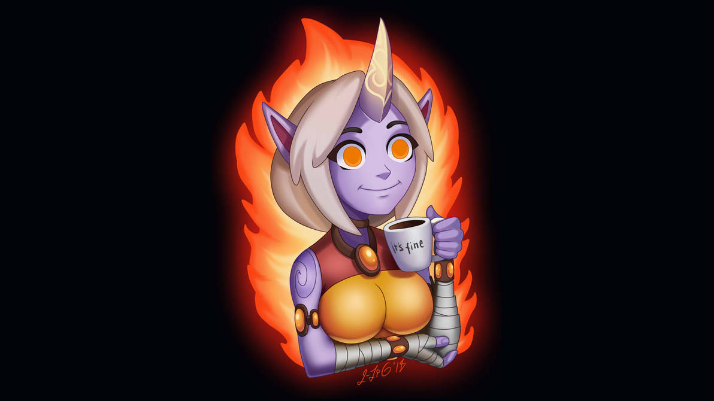

Az informatika
világa sokoldalú. Észrevétlenül a minden napjaink részévé vált. Mielőtt
azt mondanád, hogy nincs igazam emlékezz vissza arra, hogy pár nappal
ezelőtt (pontosabban október 4-én), mennyire felhúzott a tény, hogy nem
működik a Facebook és az Instagram.
Mindenki útja máshogy kezdődött. A következőkben leírom, hogy engem, hogyan szippantott magába az informatika.
Ugorjunk vissza 2013-ba. Minden egy Nokia C2-01 telefonnal kezdődött. Az a fajta Nokia volt, amit amikor leejtettem a lépcsőházban az emeletről, berepesztette a földszinten a padlót. Órákon át Snakeztem és hetente 1x töltöttem, mert akkoriban így működtek a telefonok.
A fentiek hatására bekerültem egy full
fiú baráti körbe. Ők vezettek be a videojátékok világába. Az első
játék, amivel valaha játszottam az nem más volt mint..
...
Dobpergés
...
A Minecraft volt, a haverom XBox 360-án.
2014 vége fele vettem az első laptopom. Akkor mélyedtem el úgy igazán a videojátékokban. Egyre több genret és játékot próbáltam ki.
| genre |
játék név |
| mmorpg |
World of Warcraft |
| fps |
Counter-Strike: Global Offensive |
| moba |
Dota2 |
2015 a kísérletezés éve volt. Annyi játékkal játszottam, amennyivel csak bírtam. Folyton újabb és újabb címmel bővült a Steam könyvtáram. A legtöbb játékkal 2-3 órát mentem. Túl sok lehetőség volt és nem tudtam dönteni, hogy mivel játszak.
2016 elején megismertem a League of Legendst. Azóta ez az egy játék került előtérbe. Lelassult a játékgyűjtés, aminek a pénztárcám kifejezetten hálás volt. WARNING! Nem ingyenes, a lelkedbe kerül: LoL.

2017-18as tanévben megismerkedtem a C++
programozási nyelvvel. Elég könnyen átláttam és megszerettem. Két év
alatt minden programozás felmérőm 100%os volt. Ez segített növelni az
önbizalmam ezen a téren.
2018ban megvettem az első Pc-m. Ezen mégtöbb minden elfutott és újabb lehetőségeket adott új dolgok kipróbálására. Ekkoriban nagyon magába szippantott a videogame developement és a visual design
dolgok, de nem volt időm jobban beleásni magam. Ebben segített a vírus
és a karantén, csak mégjobban összehozott az informatikával.
Több időm volt videojátékokra, főle WoW-ra.
Megismerkedtem a Blenderrel. Megvoltak az alapok és hónapról hónapra új projektekkel próbálkoztam.
2020-21es tanévben megismerkedtem a Python programozási nyelvvel. Végül ebbe írtam az emelt info érettségit.
Szabadidőmben még mindig foglalkozok Blenderrel. Újracsináltam a kezdő projektem.
Valamint kiéltem a sci-fi világalkotós álmaim.
És még szobát is modelleztem magamnak, hamár sosem volt saját szobám.A nyár elején vettem egy Oculus Quest 2-t. A virtuális valóság egy zseniálos ága az informatikának.
Ideértünk a jelenhez. A fenti út ha néha göröngyös is volt, de ide hozott, az ELTE IK-ra. És minden egyes részét imádom ennek az útnak :D